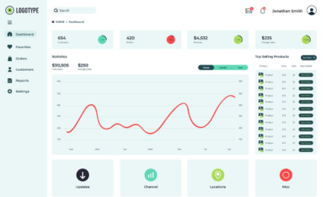
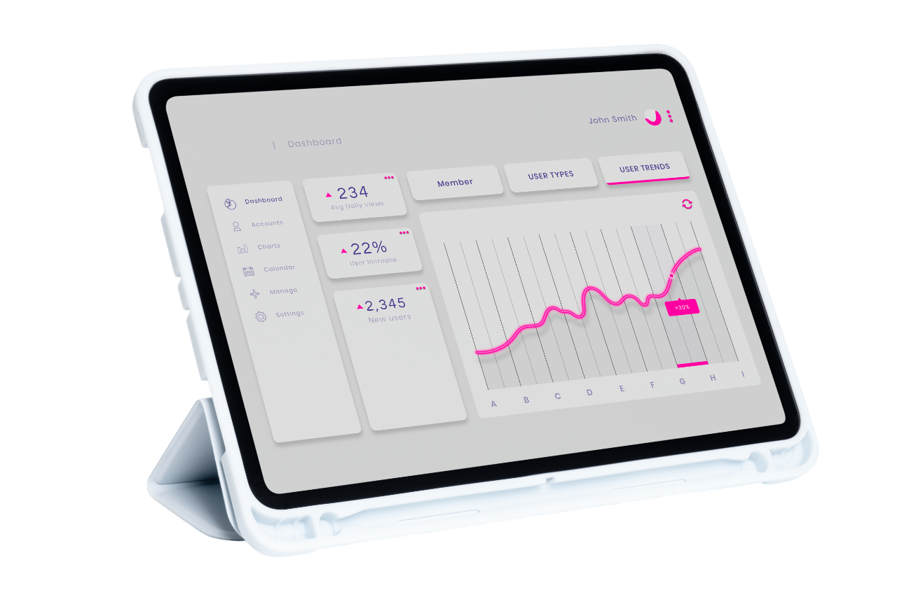
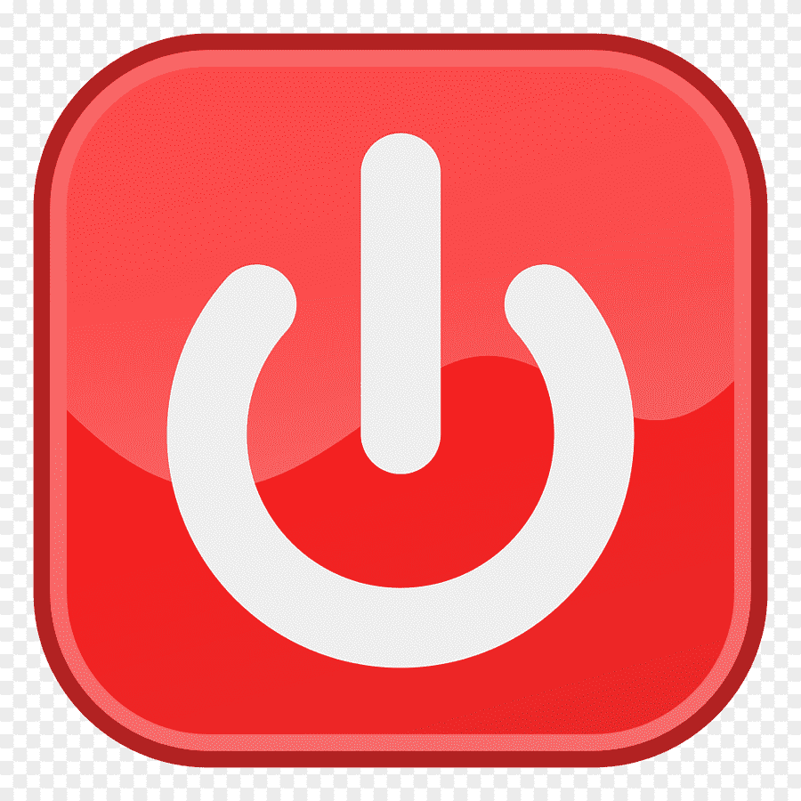
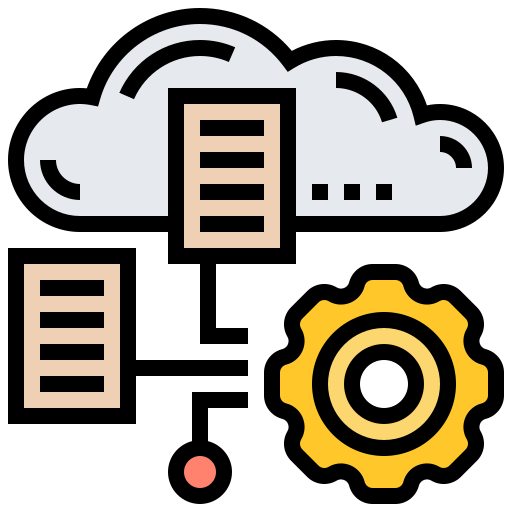

01Guided responseRespuesta guiada
Each alert tells you what to do and lets you call your emergency contact or 116 with one tap.Cada alerta te indica qué hacer y te deja llamar a tu contacto de emergencia o al 116 con un toque.
IoT safety platformPlataforma IoT de seguridad
Detects gas leaks and dangerous temperatures in your kitchen and alerts you instantly with the steps to follow.Detecta fugas de gas y temperaturas peligrosas en tu cocina y te alerta al instante con los pasos a seguir.
01 / About usSobre nosotros
At SmartGas, we believe safety in home and restaurant kitchens should be intelligent, proactive and accessible to everyone.En SmartGas creemos que la seguridad en las cocinas de hogares y restaurantes debe ser inteligente, proactiva y al alcance de todos.
02 / BenefitsBeneficios

01Each alert tells you what to do and lets you call your emergency contact or 116 with one tap.Cada alerta te indica qué hacer y te deja llamar a tu contacto de emergencia o al 116 con un toque.

02Keep constant control of gas levels and temperature with precise telemetry.Mantén un control constante de los niveles de gas y temperatura con telemetría precisa.
Stay informed from anywhere with detailed incident records.Mantente informado desde cualquier lugar con registros detallados de incidentes.
03 / FeaturesCaracterísticas
Three blocks that summarize the key functionalities of SmartGas.Tres bloques que resumen las funcionalidades clave de SmartGas.
Sensors monitor gas levels and temperature 24/7, with alert thresholds you can adjust.Sensores que monitorean el gas y la temperatura 24/7, con umbrales de alerta configurables.

An immediate notification with buttons to confirm the alert or call your contact.Notificación inmediata con botones para confirmar la alerta o llamar a tu contacto.

Check zones, alerts and history from your phone, even offline, and add sensors by scanning their QR code.Revisa tus zonas, alertas e historial desde el celular, incluso sin conexión, y agrega sensores escaneando su código QR.
04 / PlansPlanes
Find the solution that best suits your smart monitoring and gas safety requirements.Encuentra la solución que mejor se adapte a tus necesidades de monitoreo inteligente y seguridad de gas.
Ideal for small homes looking to start monitoring their safety.Ideal para pequeños hogares que buscan comenzar a monitorear su seguridad.
PEN 30For families or small businesses that need greater control and incident reports.Para familias o pequeñas empresas que necesitan mayor control y reportes de incidentes.
PEN 70Designed for large restaurants or businesses with several kitchens.Diseñado para restaurantes grandes o negocios con varias cocinas.
PEN 100